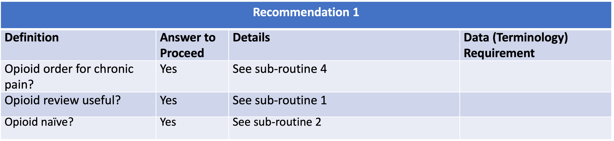
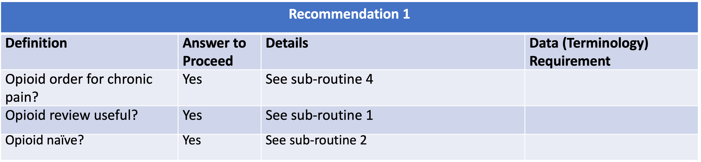

Nonpharmacologic therapy and nonopioid pharmacologic therapy are preferred for chronic pain. Clinicians should consider opioid therapy only if expected benefits for both pain and function are anticipated to outweigh risks to the patient. If opioids are used, they should be combined with nonpharmacologic therapy and nonopioid pharmacologic therapy, as appropriate (recommendation category: A, evidence type: 3).
| Resource | Type | Description |
|---|---|---|
| Recommendation #1 - Nonpharmacologic and Nonopioid Pharmacologic Therapy Consideration | Library | Defines the data requirements to support evaluation of recommendation #1 |
 
